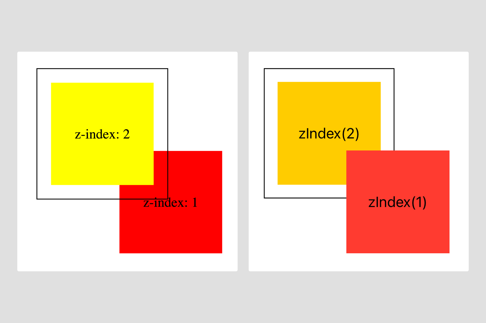

Swift Tales 2
July 2024 — In the next installments I’ll chronologically talk about the two iOS components we shipped in TPL. The first was code-named “context menu”.
Team and timeline
I led design and code prototyping. Joseph Kohlmann led engineering. Sergio Cuevas contributed engineering. We completed this work in 1.5 months.
Punk
When Dan Mall started working with the team he encouraged us designers to find ways to work as close to engineering as possible.
Until then my style of engineering collaboration was punk—sneaking around expectations to use my coding knowledge to form cross-discipline friendships and make cool stuff happen.
But without the expectation of staying in my lane, in what new ways could I be punk? I thought: If I wanted to get close to code, what if I set aside Figma, the defacto tool for “designers”, altogether?
Collaboration
I needed help from Joe and Sergio from the get-go. This is the main stuff they helped me learn:
- Xcode: Set up a simple preview environment, connect to the iOS-TPL repository, get rid of errors
- GitHub: Get auth tokens, connect to the NYT repository, commit, fetch, pull, push
- Tower: Save myself from Terminal
- SwiftUI basics: How to use our iOS-TPL tokens and who at NYT to ask for advice
- Jetpack Compose: While Android is not a supported library yet, I wanted to at least picture how everything might come together one day
But once I could work independently, I still wanted to hang with Joe and Sergio. Dan calls this way of collaborating “hot potato”, where 2-3 independent contributors pass the work between each other live. This was a speedy way to vet ideas and observe engineering life. Engineers are TPL customers at the end of the day.
But they’re not my only customers. I also serve the Brand team, and they may be on the opposite end of the spectrum. Brand must sign off on all of my work, which I honestly love. Not just because they’re awesome people, but because we all want our stuff to look and feel excellent across the Times.
The way I see it, my role as a design/eng hybrid is to convince Brand and Engineering that they want the same things. And my role as an accessibility subject matter expert is to build something that works for everyone.
In the case of context menu, however, little compromise could be had.
Prototypes
Okay, maybe I’m a tad clairvoyant. I knew Brand would prefer a fully custom popover menu. ( I did too.)
But through prototyping in Xcode, I learned that anything that requires dynamic positioning based on screen bounds is exceptionally troublesome in SwiftUI. For example, unlike web, I found SwiftUI tends to have stricter parent/child relationship rules. Because context menu needs to orient itself based on plethora factors (e.g. proximity to the element that produces it, overlaying on top of the whole screen), I was in a bind.
An example of z index on the web (left) and in SwiftUI (right) with the same parent child relationships. SwiftUI does not override the parent.
Joe felt strongly that, within our timeline, building something custom wasn’t feasible. He also pointed out the future cost of maintaining something potentially fragile and complicated especially when SwiftUI already provides a very similar component, Menu. (And it’s so easy to use).
Through this experience, I helped develop a philosophy the TPL team now tries to stick to:
- Dig into the SwiftUI docs for solutions (and create a prototype).
- Test how much can be customized and review with the Brand team (and create a prototype).
- If that fails, quickly gauge how difficult it is to go full custom and review it with Brand and iOS engineers (and create a prototype).
- Either agree on visual design compromise and lean toward SwiftUI conventions or communicate the time and cost of going full custom and go forth (and create many more prototypes).
I love prototypes.
I created an example of a SwiftUI Menu and discovered that the only detail we could adjust were optional icons next to the text (which, after reviewing with Brand, we hoped to avoid using anyway).

A SwiftUI menu triggered by an icon-only button.
Next, I attempted a fully custom version which required 340 lines of code. Showing Brand the sheer magnitude of the time and effort to go full custom was enough to convince them to stick to Apple’s native Menu.

A custom context menu that uses GeometryReader and .fullScreenCover to automatically avoid positioning the menu off the screen.
Reviewing our decision with iOS engineers was very reassuring. I think they were relieved by how creatively and harmoniously we all agreed that sticking to Apple convention was the right choice.
Summary
We built nothing!
Instead, with Brand’s approval, we now encourage TPL customers to use Apple’s native Menu in SwiftUI and UIKit.
I made 7 prototypes. I learned a ton about GeometryReader and alignment guides along the way, both of which eventually became useful knowledge for future components.
Yes. I did use Figma to sketch some ideas. I’m a punk, not a masochist! Plus, of course, we needed to offer a nice component for designers.

In Figma, an Apple Menu component in with a variant for more list items and a hidden list item subcomponent with a "destructive" red variant.
But when I reflect on this project, I find it hard to think where else Figma would’ve been the best tool. I’ve been thinking a lot about my past years feeling I needed to "break the rules" to work with code. Maybe the punk way was the best way all along.